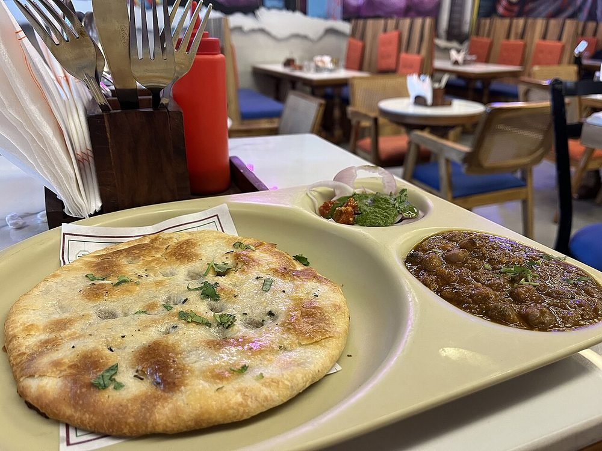

Amritsari Kulcha
crisp-bottomed stuffed maida bread, blistered and crushed under a spoonful of butter

Contains: milk, gluten
Ingredients
Quantities for 4.
- 300g Maida
- 4 tbsp, whisked Yogurt
- 1/4 tsp Baking Soda
- 1 tsp Sugar
- 2 tbsp for the dough Ghee
- 150ml, lukewarm Water
- 3 medium, boiled and cooled Potatothe stuffing must be cold and dry
- 1 small, very finely chopped Onion
- 2, finely chopped Green Chilli
- 2cm, grated Ginger
- 4 tbsp, chopped Coriander Leaves
- 1 tsp, coarsely ground Anardana
- 1 tsp Amchur
- 1 tsp Chaat Masala
- 1 tsp Coriander Powder
- 1 tsp, crushed Cumin Seeds
- 1/2 tsp Chilli Powder
- 1 tsp Nigellafor the top
- 50g, softened Buttergenerous, and non-negotiable
- to taste Salt
Cookware
oven, tawa, stovetop
Checked against the ingredient list for ten allergens: milk, egg, fish, crustaceans, tree nuts, peanuts, sesame, mustard, soy and gluten. Brands vary, so read the label on anything new to you.
Before you start
- Boil the potatoes the day before if you can. Warm, freshly boiled potato steams inside the kulcha and tears it open.
- The dough needs 2 hours at room temperature after kneading. Softer than chapati dough, almost sticky.
- Get the oven and a heavy baking tray or upturned tawa to their maximum heat for at least 20 minutes before the first kulcha goes in.
Method
- Mix the maida, baking soda, sugar and salt. Rub in the ghee, then work in the yogurt and enough lukewarm water to make a soft, slightly tacky dough. Knead 8 minutes until smooth.
- Oil the surface of the dough, cover with a damp cloth and rest 2 hours in a warm spot. It should feel puffy and slack, not springy.Under-rested dough gives you a hard flatbread rather than a kulcha.
- Grate the cold potatoes coarsely. Do not mash. Mix with the onion, green chilli, ginger, coriander leaves, anardana, amchur, chaat masala, coriander powder, crushed cumin, chilli powder and salt.Grated potato keeps the filling loose. Mashed potato turns to glue and pushes through the dough.
- Divide the dough and the filling into 6 each. Flatten a dough ball in your palm, cup a portion of filling inside, gather the edges over it and pinch shut. Rest the sealed balls 10 minutes, seam down.
- Roll each ball out to a 15cm oval, using dry maida, pressing outwards from the centre with even weight and stopping if the filling threatens to break through.
- Press nigella seeds and a little chopped coriander into the top surface, then flip and wet the underside with water using your palm.
- Slap the wet side onto the screaming-hot tray or upturned tawa. It will stick. Bake or cook 3-4 minutes until the top blisters and browns in patches.The water is what makes it grip the surface, exactly like a tandoor wall. Do not skip it.
- If using a tawa, invert the tawa over the flame for 40 seconds to char the top directly.
- Prise the kulcha off with a spatula, brush hard with softened butter, then crush it once between both palms so it cracks open.The crush is the point. It shatters the crust and lets the butter into the filling.
- Serve immediately with pindi chole and sliced onion.
Storage
Kulcha is a same-hour bread. It keeps 1 day wrapped in foil; revive on a hot tawa for 90 seconds a side with a smear of butter. The stuffing keeps 2 days refrigerated on its own.
Nutrition Good estimate
Medium protein: 12 g a serving, 9% of the calories
| Per serving278 g | Per 100 g | |
|---|---|---|
| Calories | 557 kcal | 201 kcal |
| Protein | 12.1 g | 4 g |
| Carbohydrate | 86.4 g | 31 g |
| of which sugars | 5.1 g | 2 g |
| Fibre | 6.4 g | 2 g |
| Fat | 18.5 g | 7 g |
| of which saturated | 10.9 g | 4 g |
| of which unsaturated | 6.1 g | 2 g |
Nearest database match used for amchur, chaat masala. Estimated from raw ingredients using USDA FoodData Central.
More like this: Vegetarian Indian recipes · Punjabi recipes
Times, yields, allergens and nutrition are guidance. Use your own judgement on doneness and on storing. More in About.